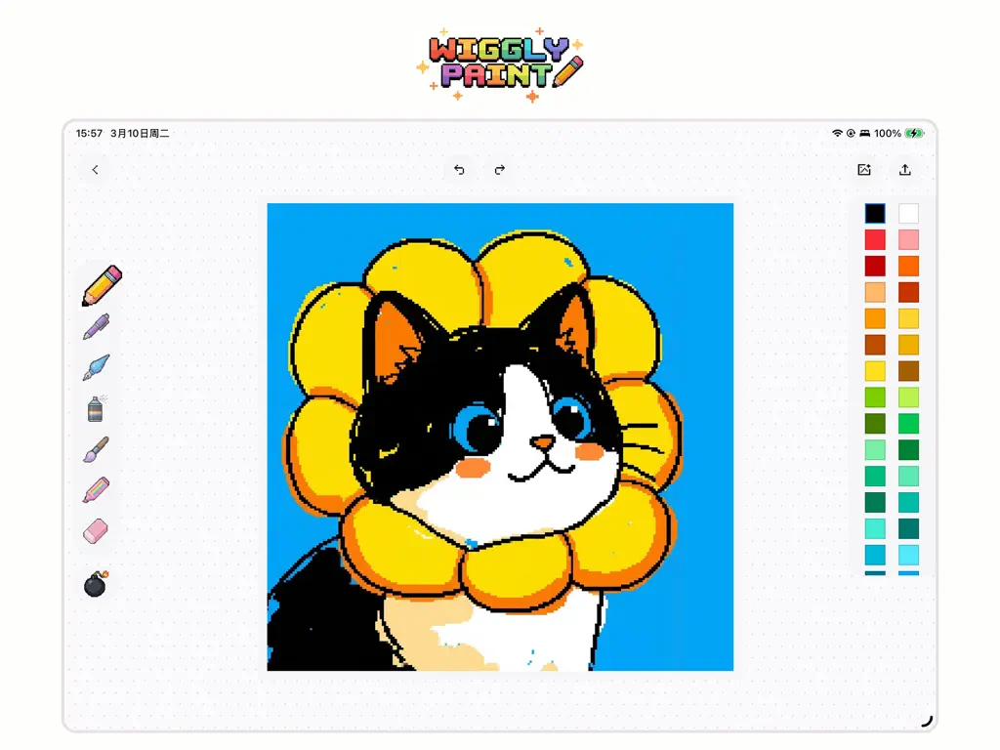

每周三条社媒动图，我把 WigglyPaint 嵌进了这条五分钟流水线
以前每条动图要在 PS 里啃半小时逐帧，现在找张参考照、画几笔、点导出——WigglyPaint 帮我把社媒素材生产压缩到了五分钟一条，讲下这条链路具体怎么搭。
我每周要给三个社媒账号各更一条动态图内容，这个习惯已经坚持了大半年。以前每条从构思到产出至少三十分钟，现在稳定在五分钟。不是我手速练出来的，是我把 WigglyPaint官网 塞进了这条工作流里，替换掉了之前最耗时间的逐帧环节。
旧流程卡在哪
旧流程是标准的"传统动效工具"思路：
- 翻 Pinterest 或小红书找一张参考图（5 分钟）
- 进 Photoshop，新建 12 帧，第一帧画轮廓（8 分钟）
- 复制到第 2 帧，手动把每条线挪一点点位置（10 分钟）
- 重复 10 次，调时间轴，导出 GIF（5 分钟）
- 到各平台分别上传，检查循环和清晰度（2 分钟）
单条 30 分钟，三条就是一个半小时。手动逐帧的问题不是慢，是枯燥——每帧画的内容几乎一样，就是整体挪一下坐标，大脑在做机械重复，很容易走神。而且画到第 10 帧的时候，第一帧的线条已经被我改出点歪了，三帧之间的抖动节奏还得自己调参数。
还有个隐形坑：GIF 循环。我踩过好几次——平台压缩完之后循环不工作，到抖音或 Reels 上只播一次就停，评论区一片"为什么不动"。每次发现都得返工，白白浪费 20 分钟。

新流程：把它插在描摹和导出之间
现在这条链路是这样的：
找参考 → WigglyPaint 描摹 → 点导出 → 分发
具体每个环节：
环节一：找参考（和以前一样，5 分钟）还是去 Pinterest 搜"mini doodle animation"或"cute loop gif"，挑一张构图简单的——轮廓清晰、线条不超过 20 条。复杂图描摹起来反而慢，WigglyPaint 擅长的就是这种"少线条、有节奏"的东西。
环节二：WigglyPaint 描摹（2 分钟，这是核心提效点） App 从官方下载拿，打开后先开背景图层——导入刚才找的参考照，透明度调到 25%，画面里只剩轮廓能看清。然后选 Pencil 画笔，顺着轮廓描一遍。
关键就在这一步：画的时候 App 已经在实时动了。我描到一半松手看，这条线自己就在微微颤抖，频率和幅度都是 Pencil 预设好的——高频小抖，像手在画的时候自然的不稳。不需要我做任何关键帧，引擎实时生成每一帧。
如果想要更夸张的动效，就换 Marker 画笔——低频大摆，像整条线在呼吸。想要童趣感就换三支蜡笔，Pink Crayon 画出来有颗粒感，抖动是慢节奏的整体摆动，完全是小时候蜡笔在纸上蹭出来的质感。
环节三：点导出（10 秒）导出面板里两个选项：GIF 或 MP4。我默认选 MP4（H.264 编码），原因是它自动循环——不像 GIF 有些平台压缩完就不循环了。MP4 自动循环是硬编码在文件里的，抖音、Reels、小红书都认。文件大小和 GIF 差不多，但播放更流畅。
只有一种情况我会选 GIF：必须要透明背景的时候。MP4 不支持透明，这是硬限制。但社媒分享透明背景其实很少用到，95% 的场景 MP4 就够了。
环节四：分发（2 分钟）导出的 MP4 直接存相册，然后逐个平台上传。因为是同一条参考图，三个账号可以用同一个素材，也可以换不同画笔再画两版，完全不费额外时间。
实操细节：两个容易断链的地方
断链点一：参考图比例和画布不匹配
我最早踩过这个坑——导入一张竖版的参考照，但画布是横版的，App 自动裁剪后参考图的关键元素被切掉了。解决办法很简单：导入前先确认画布比例和参考图一致。WigglyPaint 会自动缩放适配，但不会告诉你它裁剪了什么。养成习惯：开画前先调画布比例，再导入背景图层。
断链点二：选错画笔导致动效不对
Pencil 高频小抖适合勾线稿，但画爱心或星星这种需要整体摆动的形状，Pencil 抖出来像过电。Marker 低频大摆才是这种场景的正确选择。我现在的做法是：画之前先在画布空白处试画一笔，看看抖动效果对不对再正式开工。多花 10 秒，省了重画的 2 分钟。
背景图层只有一层，不能叠加多张参考照（这个限制在wigglypaint文档里写得很清楚）。如果构图复杂需要多张参考，我会提前在 PS 里合成一张再导入——这是唯一需要其他工具配合的地方。
效果和边界
说几个可数的数字，不是"大大提升效率"那种空话：
- 单条动图时间从 30 分钟降到 5 分钟以内
- 手动逐帧这个环节完全消失，减少了至少 20 次"复制 → 挪线 → 复制"的机械操作
- GIF 循环不工作的问题彻底解决，半年来零返工
- 大脑负担轻了很多——以前画到第 8 帧已经开始走神，现在画完就导出，没有"接下来该做什么"的决策疲劳
但这套流程也有边界：
不适合复杂动画。如果参考图有超过 30 条线条、或者需要不同物体独立运动，WigglyPaint 就不够用了——它的抖动引擎是给每条线一个统一的抖动函数，不支持物体级别的独立动画。这种场景我还是会回到传统工具。
透明背景需求必须回 GIF。MP4 不支持透明，这个限制在做网页 banner 或 PPT 嵌入的时候会暴露。不过我现在社媒 95% 的场景都是纯色或图片背景，所以这个限制基本没影响。
网页版功能不全。iOS 版用 Metal 渲染，120Hz ProMotion 下非常流畅；网页版用 Canvas，抖动节奏和 App 版可能有差异。我所有创作都在 iOS App 上完成，网页版只用来偶尔快速预览。
这条工作链跑了三个多月，零迭代——从第一次搭好到现在没改过环节顺序或工具。WigglyPaint 完美卡在了"找参考"和"导出"之间这个位置，它的抖动引擎直接替我省掉了逐帧这个最痛的环节。如果你想进一步研究它的抖动引擎实现细节，iOS 版 Metal 渲染和网页版 Canvas 方案的差异挺有意思，我整理的源码和技术笔记分别放在了GitHub、Gitee、GitCode 三个仓库，选哪个顺手用哪个。如果你的日常工作里也有"逐帧重复"这种机械环节，值得试试能不能找个工具像这样把它吞掉。